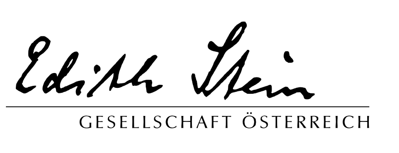

Teresianischer Karmel in Österreich
Verlag Christliche Innerlichkeit

Edith Stein Gesellschaft Österreich
Marienschwestern vom Karmel
Organisationsteam
Die Online Exerzitien wurden von den Karmeliten der Provinz Paris erstellt. Die Aussendung in deutscher Sprache geschieht als Initiative des Verlags Christliche Innerlichkeit und des Teresianischen Karmel in Österreich, der Edith Stein Gesellschaft Österreich und der Marienschwestern vom Karmel. Die deutsche Fassung wurde von den Karmelitinnen in Mayerling bereitgestellt.
Teresianischer Karmel in Österreich
Wir sind eine Ordensgemeinschaft in der katholischen Kirche, die ihren Anfang im 12. Jahrhundert am Berg Karmel genommen hat. Der Prophet Elija und die Gottesmutter Maria waren Vorbilder in der Nachfolge Christi für die Brüder der seligsten Jungfrau Maria vom Berge Karmel, die zu Beginn des 13. Jahrhunderts vom Patriarchen Albert von Jerusalem ihre Regel bekommen haben. Teresa von Ávila und Johannes vom Kreuz haben unsere Gemeinschaft im 16. Jahrhundert erneuert. Wir sehen es als unseren Auftrag, das kontemplative Leben zu pflegen und den Menschen den Weg der Freundschaft mit Gott zu zeigen. Die Heiligen des Karmel sind uns auch Hilfe und Vorbild: Thérèse von Lisieux, Elisabeth von der Dreifaltigkeit, Edith Stein und viele andere mehr.
Homepage der Karmeliten in ÖsterreichVerlag Christliche Innerlichkeit
Aus Worten gewachsen. Aus Geist getragen. Seit mehr als 40 Jahren widmet sich unser CI-Verlag der Verbreitung christlicher, insbesondere karmelitanischer Spiritualität - gegründet von den Unbeschuhten Karmeliten in Österreich, getragen vom geistlichen Erbe des Karmel. Die Bücher sind im Klosterladen Linz erhältlich – im Onlineshop oder vor Ort in der Linzer Landstraße. So finden geistliche Impulse ihren Weg dorthin, wo sie gelesen, verschenkt und gelebt werden.
Homepage der CI VerlagEdith Stein Gesellschaft Österreich
Die Edith Stein Gesellschaft Österreich (ESGÖ) wurde am 5. Oktober 2012 gegründet und setzt sich zum Ziel, die Erinnerung an Edith Stein (Sr. Teresia Benedicta a Cruce OCD) als Frau, Philosophin, Tochter des jüdischen Volkes, Christin, Karmelitin, und ihre Verehrung als Heilige und Mitpatronin Europas zu wecken, wachzuhalten und zu vertiefen, sowie ihr philosophisches, pädagogisches und spirituelles Erbe zu erschließen und dieses in den wissenschaftlichen und gesellschaftlichen Diskurs einzubringen.
Homepage der Edith Stein Gesellschaft ÖsterreichMarienschwestern vom Karmel
Wir Marienschwestern vom Karmel verstehen uns als Zweig des Karmelordens.
Karmel ist ein Gebirgszug in Palästina, auf den sich im 12. Jh. n. Chr. Pilger zurückzogen. Sie bemühten sich nach dem Vorbild des Propheten Elija in der Gegenwart des Herrn zu leben und nannten sich „Brüder unserer lieben Frau vom Berge Karmel“.
Durch den Einfall der Sarazenen aus Palästina vertrieben, kamen diese Einsiedler nach Europa, wo sie als Bettelmönche anerkannt wurden. Im 16. Jh. reformierten Teresa von Avila und Johannes vom Kreuz den Orden und vertieften durch ihr Leben und ihre Lehre entscheidend die Spiritualität des Karmel.
In dieser Tradition verwurzelt, schöpfen wir aus denselben Quellen. 1861 schlossen sich Frauen von Riedau, Eferding und Linz, die schon in der karmelitanischen Spiritualität lebten, in Linz unter dem Namen „Schwestern des III. Ordens Unserer Lieben Frau vom Berge Karmel“ zusammen.
Bischof Rudigier von Linz machte die Schwestern auf die Nöte der Zeit aufmerksam und wies ihnen so den Weg in die caritative Tätigkeit. Seit 1961 nennen wir uns Marienschwestern vom Karmel.
Homepage der Marienschwestern vom Karmel